Fundacja „Ostatnia Warta” rozpoczęła swoją działalność 25 lutego 2026 roku. Od samego początku przyświeca nam cel, aby nikt nie musiał odchodzić w samotności. Rozwój naszej misji, szkolenie wolontariuszy i organizacja opieki nie byłyby możliwe bez zaufania i realnego wsparcia ze strony zewnętrznych partnerów.
Poniżej pragniemy z całego serca podziękować tym, którzy uwierzyli w naszą wizję już na samym starcie i dołożyli swoją cegiełkę do budowy godniejszego świata. Działamy nowocześnie i transparentnie, a dzięki wsparciu global liderów technologicznych możemy skupić się na niesieniu pomocy, obniżając koszty administracyjne do minimum.
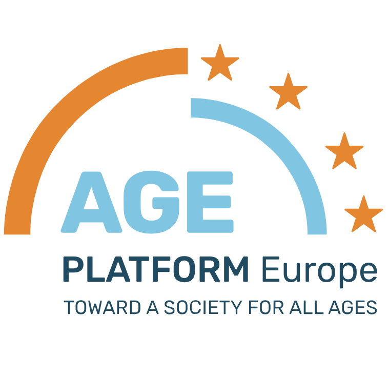
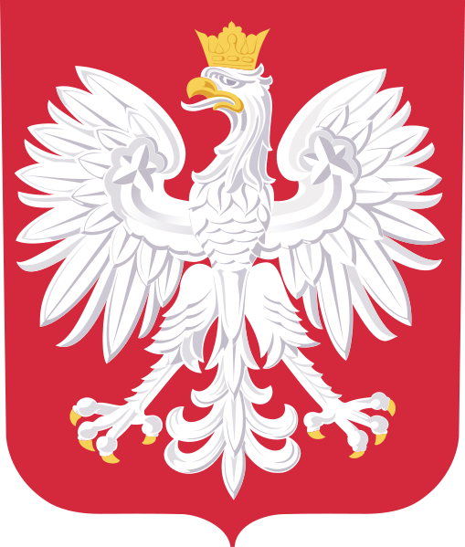
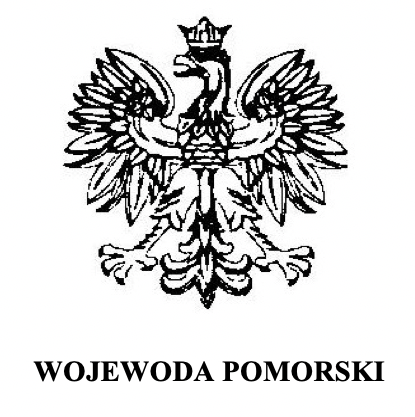
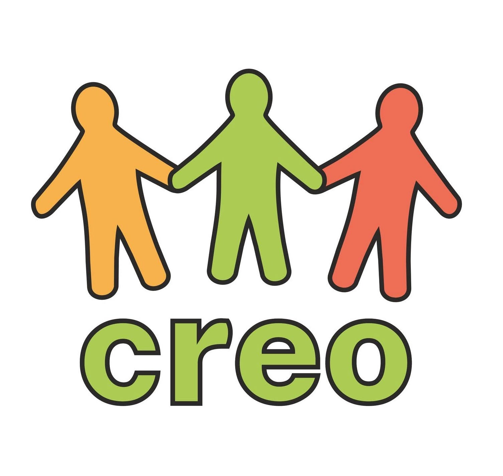
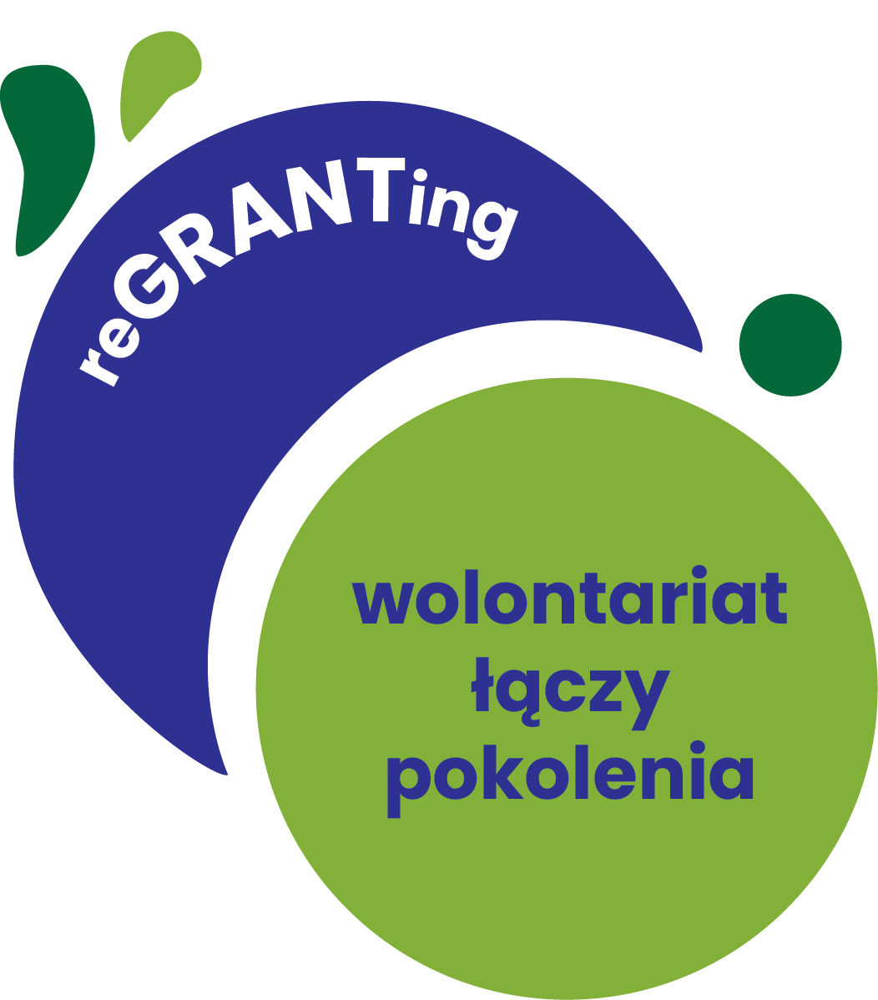
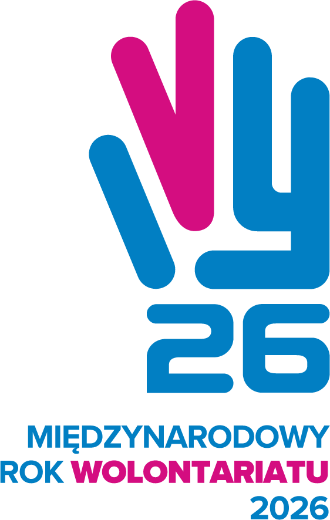
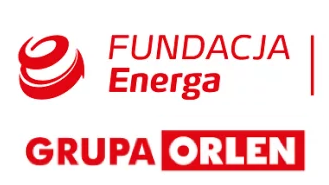
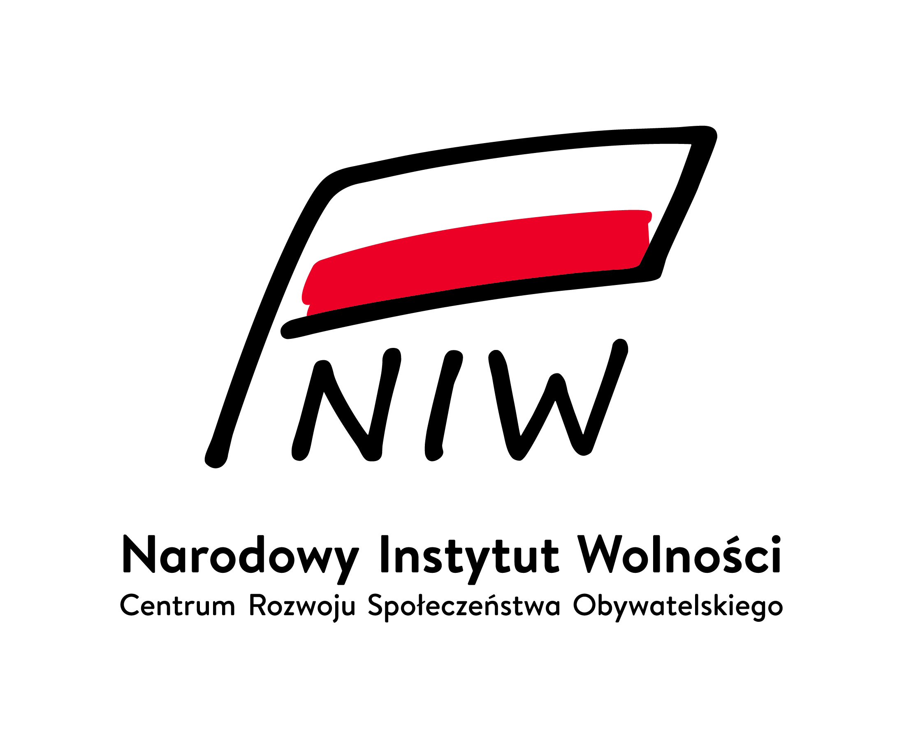
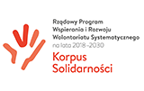
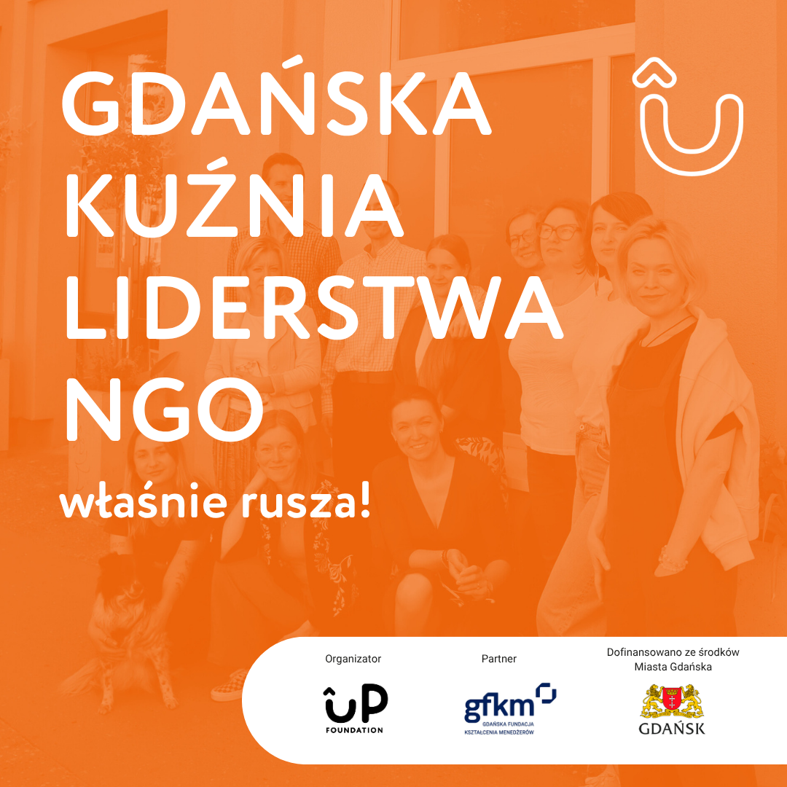
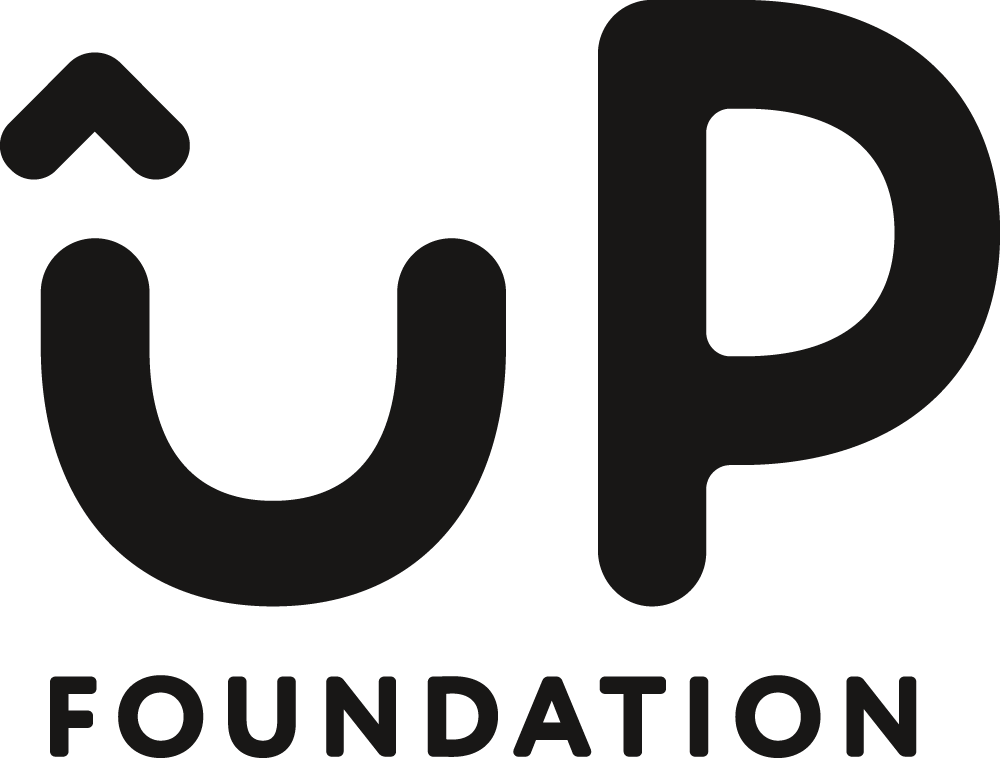
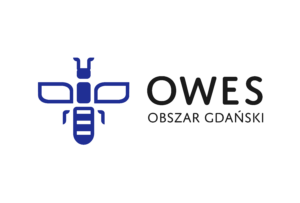
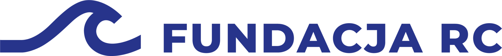
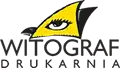
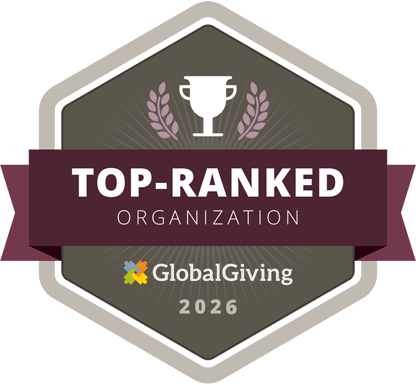
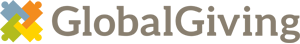
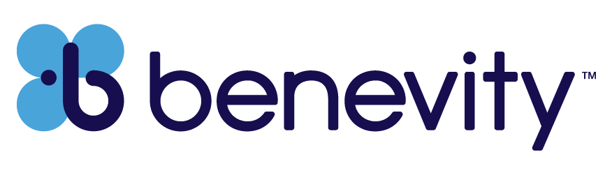
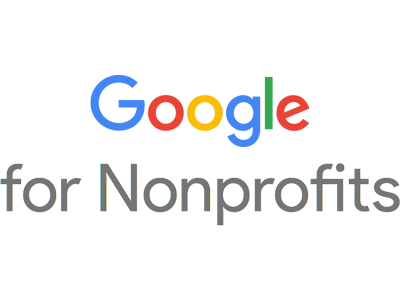
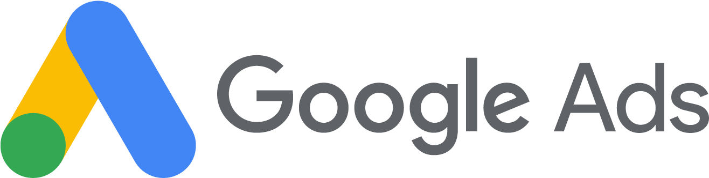
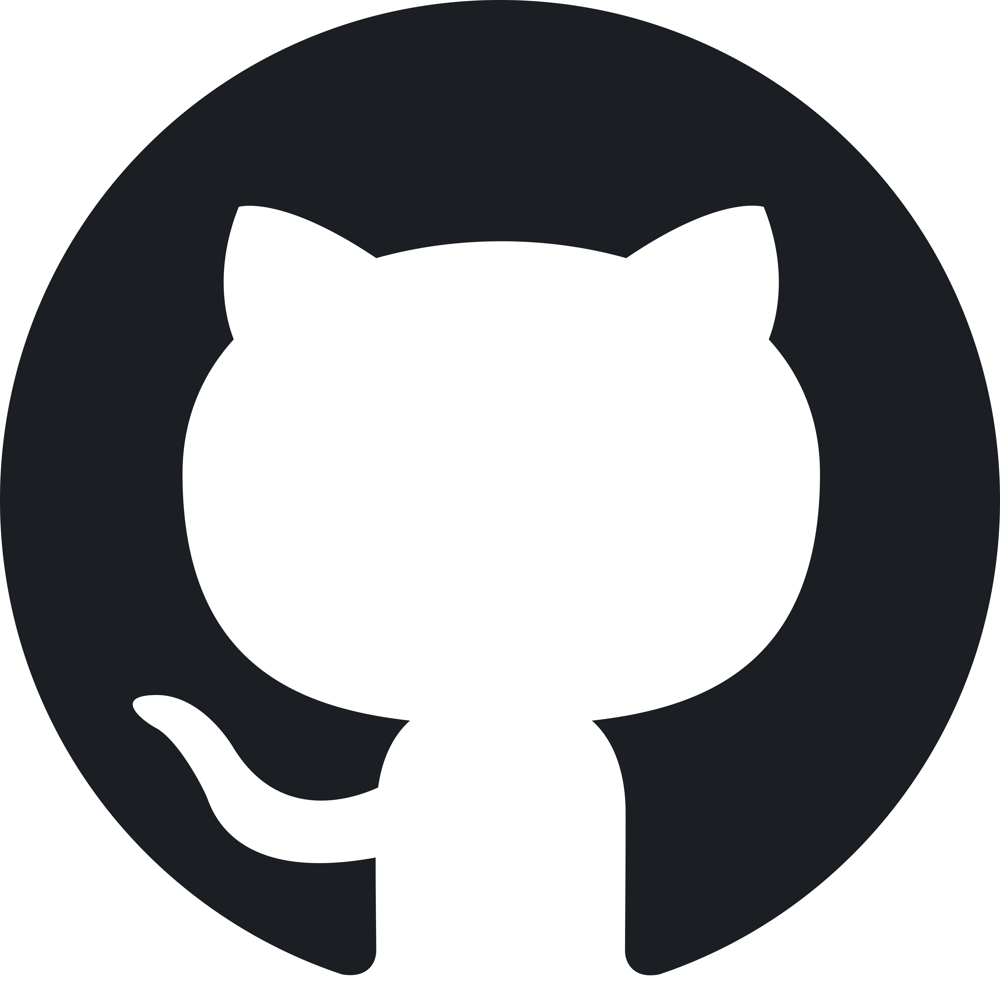
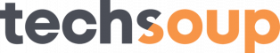
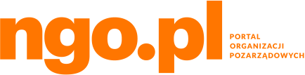
Prowadzisz firmę i bliska jest Ci społeczna odpowiedzialność biznesu (CSR)? Chcesz realnie wpłynąć na to, jak w naszym społeczeństwie wygląda opieka nad osobami terminalnie chorymi i samotnymi?
Poznaj ofertę dla biznesu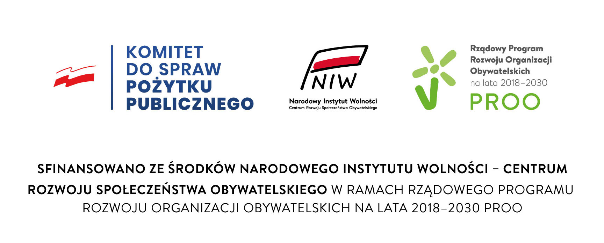